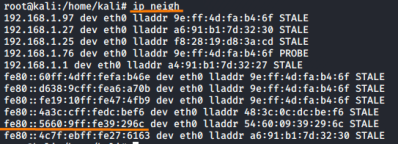
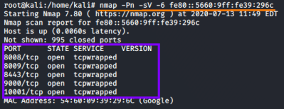

ip neigh: Finding IPv6 targets
Scanning targets using the IPv6 protocol can be helpful for penetration testers because many firewalls and IPSs
do not filter, block, or detect attacks transmitted via IPv6.
Even if the target organization's ISP does not transmit IPv6 traffic to the target over the internet, chances are that the target systems themselves speak IPv6 and can be accessed locally within the DMZ and intranet using the protocol, especially from systems on the same subnet.
We can exploit a system across the internet using IPv4 to gain access to a DMZ or internal network. Then we can scan for and exploit other targets using IPv6.
We can use IPv6 addresses in Nmap using the "
-6" option.
find targets on the local network
ff02::1 → multicast address for a local subnet to identify IPv6 hosts
ff02::2 → multicast address for a local subnet to identify IPv6 routers.
We can use
ping6 to find targets/neighbors:
ping6 -I eth0 ff02::1 #hosts
ping6 -I eth0 ff02::2 #routers
The neighbors are cached thanks to the discovery previously done by
ping6, we can see them by typing:
Then we can launch an Nmap scan to the IPv6 host, for example it could be like that:
nmap -Pn -sV -6 fe80::5660:9ff:fe39:296c
example:
